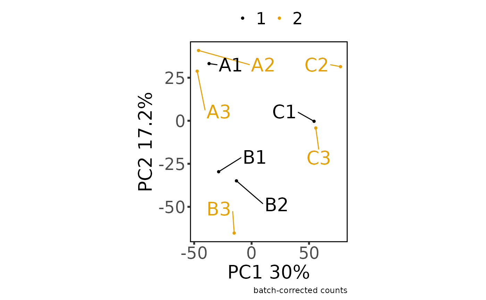

library(MOSuite)
library(dplyr)
#>
#> Attaching package: 'dplyr'
#> The following objects are masked from 'package:stats':
#>
#> filter, lag
#> The following objects are masked from 'package:base':
#>
#> intersect, setdiff, setequal, union
options(moo_print_plots = TRUE)
moo_nidap <- create_multiOmicDataSet_from_dataframes(
sample_metadata = as.data.frame(nidap_sample_metadata),
counts_dat = as.data.frame(nidap_raw_counts)
) %>%
clean_raw_counts() %>%
filter_counts(group_colname = "Group") %>%
normalize_counts(group_colname = "Group") %>%
batch_correct_counts(
covariates_colname = "Group",
batch_colname = "Batch",
label_colname = "Label"
) %>%
diff_counts(
count_type = "filt",
sub_count_type = NULL,
sample_id_colname = "Sample",
feature_id_colname = "GeneName",
covariates_colnames = c("Group", "Batch"),
contrast_colname = c("Group"),
contrasts = c("B-A", "C-A", "B-C"),
input_in_log_counts = FALSE,
return_mean_and_sd = FALSE,
return_normalized_counts = TRUE,
voom_normalization_method = "quantile",
)
#> * cleaning raw counts
#> Not able to identify multiple id's in GeneName
#> Columns that can be used to aggregate gene information GeneName
#> Aggregating the counts for the same ID in different chromosome locations.
#> Column used to Aggregate duplicate IDs: GeneName
#> Number of rows before Collapse: 43280
#> no duplicated IDs in GeneName
#> * filtering clean counts
#> Number of features after filtering: 7943


#> * normalizing filt counts
#> Total number of features included: 7943
#> Warning: ggrepel: 1 unlabeled data points (too many overlaps). Consider
#> increasing max.overlaps


#> Sample columns: A1, Sample columns: A2, Sample columns: A3, Sample columns: B1, Sample columns: B2, Sample columns: B3, Sample columns: C1, Sample columns: C2, Sample columns: C3
#> * batch-correcting norm-voom counts
#> Found2batches
#> Adjusting for2covariate(s) or covariate level(s)
#> Standardizing Data across genes
#> Fitting L/S model and finding priors
#> Finding parametric adjustments
#> Adjusting the Data


#> The total number of features in output: 7943
#> Number of samples after batch correction: 10
#> * differential counts
#> Setting first column of `counts` as gene annotation.
#> Total number of genes included: 7943
#> `geom_smooth()` using method = 'gam' and formula = 'y ~ s(x, bs = "cs")'
moo_nidap@analyses$diff %>% head()
#> GeneName B-A_FC C-A_FC B-C_FC B-A_logFC C-A_logFC B-C_logFC
#> 1 Mrpl15 1.059250 -1.068725 1.132046 0.08304265 -0.09589040 0.1789331
#> 2 Lypla1 1.370909 -1.066981 1.462734 0.45513310 -0.09353458 0.5486677
#> 3 Tcea1 1.083699 -1.177051 1.275569 0.11596469 -0.23517638 0.3511411
#> 4 Atp6v1h 1.311199 -1.221374 1.601465 0.39088683 -0.28850521 0.6793920
#> 5 Rb1cc1 1.514888 1.313927 1.152946 0.59921070 0.39388567 0.2053250
#> 6 Pcmtd1 1.112738 3.238362 -2.910264 0.15411405 1.69526432 -1.5411503
#> B-A_tstat C-A_tstat B-C_tstat B-A_pval C-A_pval B-C_pval B-A_adjpval
#> 1 0.2377167 -0.2897955 0.5285947 0.8162052 0.777035116 0.60695058 0.9682636
#> 2 1.1301522 -0.2379598 1.3910079 0.2810081 0.816021040 0.19006353 0.7797612
#> 3 0.3657617 -0.7602905 1.1281746 0.7210585 0.462100568 0.28180907 0.9500109
#> 4 1.1241780 -0.8324070 1.9865449 0.2834330 0.421815393 0.07085778 0.7825194
#> 5 1.3095182 0.9073581 0.4843119 0.2154459 0.382492765 0.63708764 0.7187843
#> 6 0.2497788 3.4021010 -2.9536960 0.8070821 0.005417489 0.01233497 0.9663212
#> C-A_adjpval B-C_adjpval A1 A2 A3 B1 B2 B3
#> 1 0.89204033 0.8355016 6.790471 6.700108 6.640742 6.224241 6.381441 7.022469
#> 2 0.91228196 0.4871490 7.044587 6.781339 6.525757 6.468469 6.570792 7.588399
#> 3 0.69160897 0.5893629 6.933534 7.324339 7.127986 7.476012 7.329584 7.107831
#> 4 0.65837683 0.3168579 6.507046 7.261517 7.002701 7.311825 7.520832 7.297114
#> 5 0.62547476 0.8518020 5.854326 6.764199 6.745353 5.748975 7.105729 7.171486
#> 6 0.05722644 0.1411803 6.126888 6.216408 4.486891 5.239345 4.811866 6.123205
#> C1 C2 C3
#> 1 6.017919 7.030723 6.596843
#> 2 5.918805 6.430298 7.246364
#> 3 7.189263 6.187955 7.195633
#> 4 7.217828 6.670645 6.013050
#> 5 5.563335 7.190990 7.427213
#> 6 6.721852 7.242167 7.333287